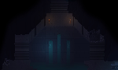

Mourn
Pixel Vinyl
Echo
Simon Pong
JocondeLab
Yes I Speak Touriste
Bourse Emploi Paris
Paris Shop & Design
@ÉCOLE DES GOBELINS
Juin 2014 - Juin 2015
- Unity 3D
Projet de fin d'études à Gobelins ayant pour thème "Le changement". Il s'agit d'un jeu vidéo en coopération sur plateforme desktop réalisé à l'aide du logiciel Unity 3D entre deux joueurs ne se connaissant pas et pouvant échanger par le biais d'une communication sensorielle. Adaptation libre du roman "Voyage au centre de la terre" de Jules Verne, le jeu prend le parti de de traiter du deuil en toile de fond pour aborder les différentes étapes de gameplay entre les deux joueurs



@ÉCOLE DES GOBELINS
Novembre 2014 - workshop de 5 jours
- Javascript
- WebGL
- ThreeJS
Workshop de 5 jours autour de la technologie WebGL en s'appuyant sur la librairie threeJS. Le thème était "la forme".
@ÉCOLE DES GOBELINS
Septembre 2014 - Janvier 2015
- iOS
- Objective-C
Conception et réalisation d'une application iOS ayant pour thème "la presse 2.0" à 5 (2 graphistes et 3 développeurs), dont le but était de réinteresser les digitals native aux contenus de la Fondation Thomson Reuters. Le projet prenait le parti de suivre le journaliste dans ses investigations au jour le jour.
@ÉCOLE DES GOBELINS
Janvier 2015 - workshop de 5 jours
- Arduino
- Processing
Expérimentations autour de latechnologie Arduino. Conception, réalisation et façonnage d'une table de jeu arcade à trois développeurs. Le ut était de réalisé un jeu vidéo convivial à 4 joueurs reprenant les concepts des jeux PONG et SIMON, les joueurs devant s'affronter par équipe de 2 lors d'un match de pong et en même temps réaliser des séquences de couleur afin d'attribuer des bonus ou malus à l'une ou l'autre des 2 équipes.
@ÉCOLE DES GOBELINS
Septembre 2013 - Décembre 2013
- PGSQL
- Framework Atomik
- PHP
Projet étudiant réalisé en binôme (graphiste / développeur) en partenariat avec le ministère de la culture. Le but était de concevoir et produire un site s'appuyant sur leur base de données "joconde" regroupant les oeuvres présentes dans les musées nationaux ainsi que les méta datas liées (auteur, période, courant, sujets représentés...).
Notre angle a été l'installation d'une plateforme d'échange entre amateurs et passionnés afin de répondre aux questions que peuvent se poser les amateurs d'art.
Notre angle a été l'installation d'une plateforme d'échange entre amateurs et passionnés afin de répondre aux questions que peuvent se poser les amateurs d'art.
@CHAMBRE DE COMMERCE DE PARIS
Février 2014 - Juin 2014 / Janvier 2015 - Juin 2015
- PHP
- Phonegap
- Javascript
- API googleMap
- MySQL
Développement en autonomie d'un site internet et d'une application multi-plateforme traduite en 8 langues avec permettant aux étrangers de trouver les commerces parisiens parlant leur langue.
@CHAMBRE DE COMMERCE DE PARIS
Janvier 2015 - Février 2015
- Framework Symfony 2
- PHP
BOURSE EMPLOI PARIS
Reprise et amélioration du site Bourse Emploi Paris, ajout de fonctionnalités dans la zone administrateur et création d'un espace CV-thèque à l'aide du framework Symfony2.
@CHAMBRE DE COMMERCE DE PARIS
octobre 2014 - décembre 2014
- HTML
- CSS
- PHP
PARIS SHOP & DESIGN
Réalisation du site permettant l'inscription au concours d'architecture intérieure des magasins parisiens Paris Shop & Design. Réalisation du back office (téléversement de photos, gestion de compte, ...) et de l'interface d'administration.